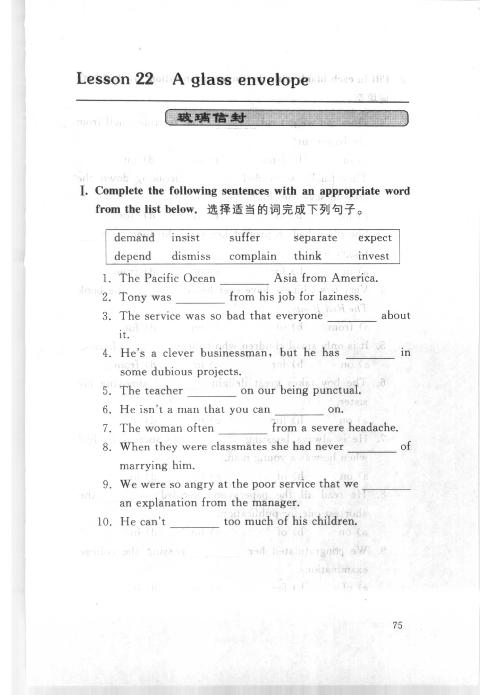
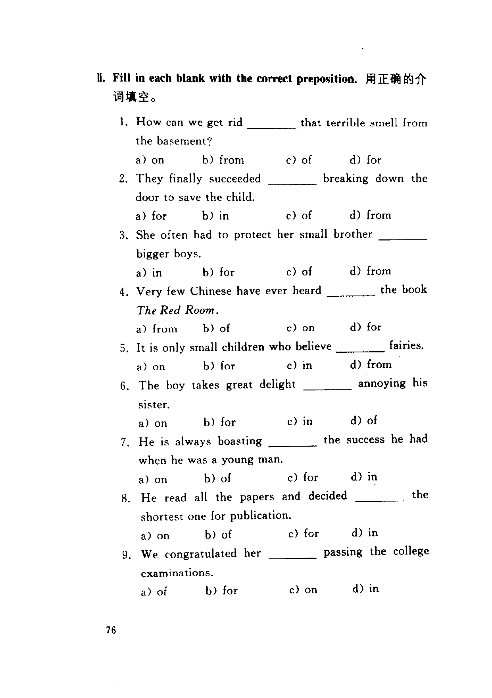
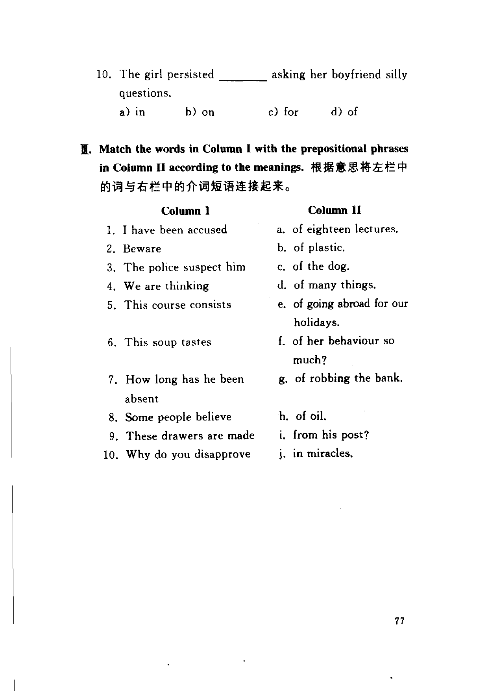

Grammar exercises · 语法练习
I. Complete the following sentences with an appropriate word from the list below.
选择适当的词完成下列句子。
demand · insist · suffer · separate · expect · depend · dismiss · complain · think · invest
-
I. Vocabulary — The Pacific Ocean Asia from America.
-
I. Vocabulary — Tony was from his job for laziness.
-
I. Vocabulary — The service was so bad that everyone about it.
-
I. Vocabulary — He's a clever businessman, but he has in some dubious projects.
-
I. Vocabulary — The teacher on our being punctual.
-
I. Vocabulary — He isn't a man that you can on.
-
I. Vocabulary — The woman often from a severe headache.
-
I. Vocabulary — When they were classmates she had never of marrying him.
-
I. Vocabulary — We were so angry at the poor service that we an explanation from the manager.
-
I. Vocabulary — He can't too much of his children.
II. Fill in each blank with the correct preposition.
用正确的介词填空。
-
II. Preposition — How can we get rid that terrible smell from the basement? a) on b) from c) of d) for
-
II. Preposition — They finally succeeded breaking down the door to save the child. a) for b) in c) of d) from
-
II. Preposition — She often had to protect her small brother bigger boys. a) in b) for c) of d) from
-
II. Preposition — Very few Chinese have ever heard the book The Red Room. a) from b) of c) on d) for
-
II. Preposition — It is only small children who believe fairies. a) on b) for c) in d) from
-
II. Preposition — The boy takes great delight annoying his sister. a) on b) for c) in d) of
-
II. Preposition — He is always boasting the success he had when he was a young man. a) on b) of c) for d) in
-
II. Preposition — He read all the papers and decided the shortest one for publication. a) on b) of c) for d) in
-
II. Preposition — We congratulated her passing the college examinations. a) of b) for c) on d) in
-
II. Preposition — The girl persisted asking her boyfriend silly questions. a) in b) on c) for d) of
III. Match the words in Column I with the prepositional phrases in Column II according to the meanings.
根据意思将左栏中的词与右栏中的介词短语连接起来。
Column I
-
III. Match — Column I: I have been accused
-
III. Match — Column I: Beware
-
III. Match — Column I: The police suspect him
-
III. Match — Column I: We are thinking
-
III. Match — Column I: This course consists
-
III. Match — Column I: This soup tastes
-
III. Match — Column I: How long has he been absent
-
III. Match — Column I: Some people believe
-
III. Match — Column I: These drawers are made
-
III. Match — Column I: Why do you disapprove
Column II
a. of eighteen lectures.
b. of plastic.
c. of the dog.
d. of many things.
e. of going abroad for our holidays.
f. of her behaviour so much?
g. of robbing the bank.
h. of oil.
i. from his post?
j. in miracles.
Original images · 原图对照
Expand a page to compare it with the transcription. Open the original in a new tab to zoom in.
展开原图核对文字，也可以在新标签页打开原图放大查看。
Book page 1 · Exercise I (vocabulary, items 1–10)
Open original · 打开原图 ↗ Download original · 下载原图


Book page 2 · Exercise II (prepositions, multiple choice, items 1–9)
Open original · 打开原图 ↗ Download original · 下载原图


Book page 3 · Exercise II (item 10) and Exercise III (matching, Columns I and II)
Open original · 打开原图 ↗ Download original · 下载原图


Your notes and answers
Use this space for longer responses or exercises that do not have an individual answer box.